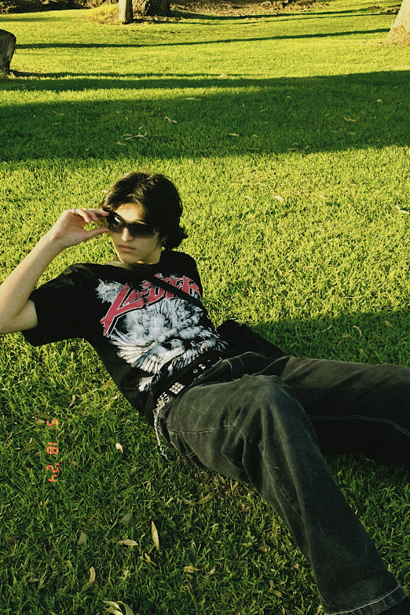

First things first...
To start off, the number one rule of taking photography is that it is an art form. So, it's a necessity to get creative with your photo-taking. Photography then aims to capture light and/or objects with a camera. Now in the technology age, we can manipulate images in a vast variety of ways. Another important note is to take your time and to enjoy capturing images!!
Prior Knowledge
Prior knowledge consists of a basic understanding of your camera and its settings. This can look like adjusting brightness or applying filters.
For artistic purposes, it is important to consider light, emotion, subject and composition. Studying up on colour theory and subject matter representation wouldn't hurt as well! For example, if you want a more dreamy-like aesthetic, it can look like this:
For artistic purposes, it is important to consider light, emotion, subject and composition. Studying up on colour theory and subject matter representation wouldn't hurt as well! For example, if you want a more dreamy-like aesthetic, it can look like this:

As you can see, the images have:
- A more blurred appearance to mimic a hazy feeling
- Bright, saturated colour grading to make it less realistic
- Model positioned looser to communicate a free and flowing vibe